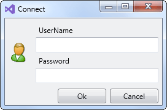

Refreshing the Unix Run Time View |
|
Once you have built or rebuilt your code in the Unix workspace declared as an image of your current Windows workspace, you need to refresh the run time view. This applies to the full workspace. |
Before you begin:
|
Before being able to run the written application, and after you have built it, you need to refresh its run time view with the new built objects (modules and shared libraries) and the newly created or modified resources.
On the Tools menu, click Refresh Unix Runtime View.
The Connect dialog box opens if you were not connected to Unix.

In this case, in the User Name box, type your Unix user name.
In the Password box, type your Unix user password.
Click OK.
The Output windows is refreshed with the mkRtv log.
| Warning: Your password is never stored on disk. It is encrypted and kept in memory It is deleted from memory when you exit Visual Studio. |
| Version: 1 [Feb 2018] | Document created |